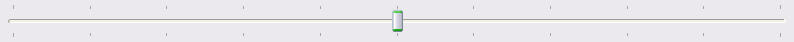
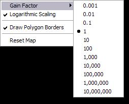

The Map View displays geographic images that reflect the state of an active Simulation.
The state information displayed in the map view directly corresponds to the values updated by one of the Decorators in the Simulation. The particular Decorator is selected by a "combo box" in the lower left of the view. Each Decorator updates a number of properties (i.e., values that define the state of the Simulation). The Map view can display the "relative" values of these properties with different intensities/colors. The specific property is selected by the combo box beneath the one that selects the Decorator.
The image can be panned by holding the left mouse button down and dragging the cursor.
The image can be made larger or smaller by clicking on the "scale bar" beneath the image.
A pop-up context menu is available by right-clicking on the image.
There are two sub-menus, one to specify the "gain factor" to use when displaying values, and another to select the "projection" to be used when displaying the map.
The gain factor scales the values of the properties so that small values can be visualized. 
The projection option is not fully implemented.